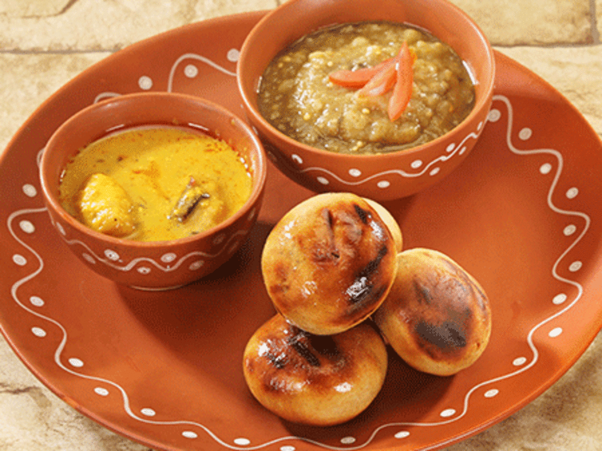
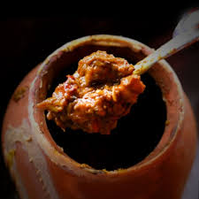
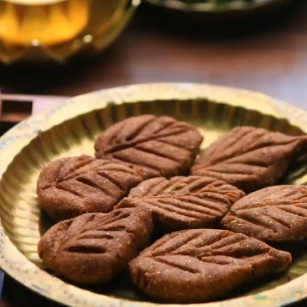
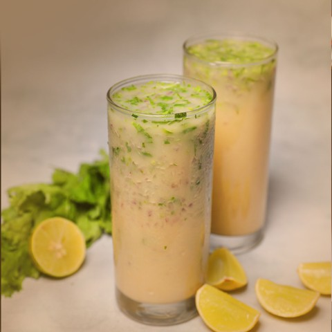
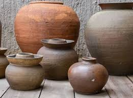
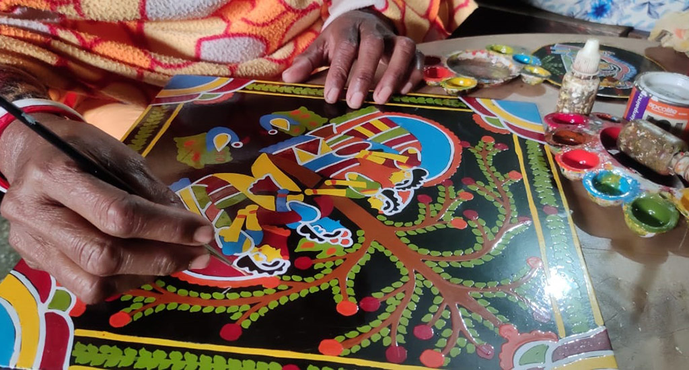

Famous Litti-Chokha
Litti chokha is a traditional, flavorful, and nutritious dish from the Indian state of Bihar.A dough ball made from whole wheat flour and stuffed with a spiced mixture of roasted gram flour (sattu). Littis are typically cooked in a tandoor or over an open flame, giving them a smoky flavor and crispy texture.A mashed preparation of boiled vegetables, like eggplant, tomatoes, and potatoes, mixed with spices, mustard oil, garlic, and green chilies.

Champaran handi meat
Champaran meat, also known as Ahuna meat or batlohi, is a popular dish from the Champaran district of Bihar, India.The meat is marinated in a mix of exotic spices and cooked in a buttery sauce, which gives it a rich flavor. The addition of an entire garlic bulb gives the dish a unique twist.

Thekua
Thekua is a traditional, deep-fried, sweet snack from Bihar, India, that is also popular in the Indian state of Uttar Pradesh and in some regions of NepalThekua is a revered prasada, or religious offering, that is made during Chhath Puja, a festival dedicated to the sun god. Devotees offer thekua to the sun god as a symbol of devotion and a request for blessings of prosperity and well-being.

Sattu Sharbat
Sattu sharbat is a savory drink from Bihar, India that's made with sattu, a flour or meal made from roasted chickpeas or barley.Sattu is a superfood that's rich in fiber, protein, calcium, magnesium, iron, and potassium. It has a low glycemic index, so it doesn't cause blood sugar spikes, making it suitable for diabetics. Sattu is also a good source of energy and can help keep you active and alert
Bihari Arts andCulture
Rock Painting
Rock paintings are a particular form of paintings done on the walls and ceilings of the cave shelter
of ancient man. These paintings were the reflections of their social, cultural, religious and
economic life. His main object of drawing were objects of nature like sun, moon, stars, animals,
birds, plants, trees and rivers etc. Besides he used to draw several activities of everyday life
like hunting, running, dancing and walking..

Pottery Works
Pottery is made on clay. Bihar had a rich history of clay pottery work. Since the time of Mauryan and
Gupta this art has been in practice in Bihar. The archeological excavations at places like Nalanda
and Rajgir had confirmed the existence of this artistic craft in Bihar. Beautiful earthen utensils
and tiles are made by potters of Bihar. They have the abilities and skill to do artistic and
beautiful paintings on earthen pots. .

Tikuli Craft
Tikuli is a form of craft made from broken glass. The craftsmen first melt the broken glass and then give is shape and design. Patna and Harihans cities are very famous for manufacturing of this craft. The chief markets of Tikuli are Banaras, Patna and Calcutta.
Chhath Puja
Chhath Puja is a Hindu festival that honors the Sun God, Surya, and is celebrated in India and Nepal.Chhath Puja is a four-day festival that takes place in the months of Chaitra (March–April) and Kartika (October–November). It is celebrated to thank the Sun God for sustaining life on Earth and to ask for certain wishes to be granted.